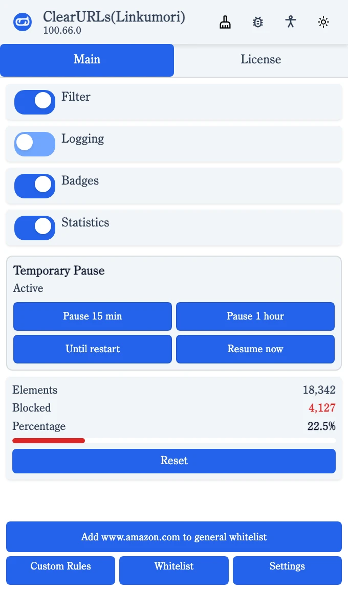
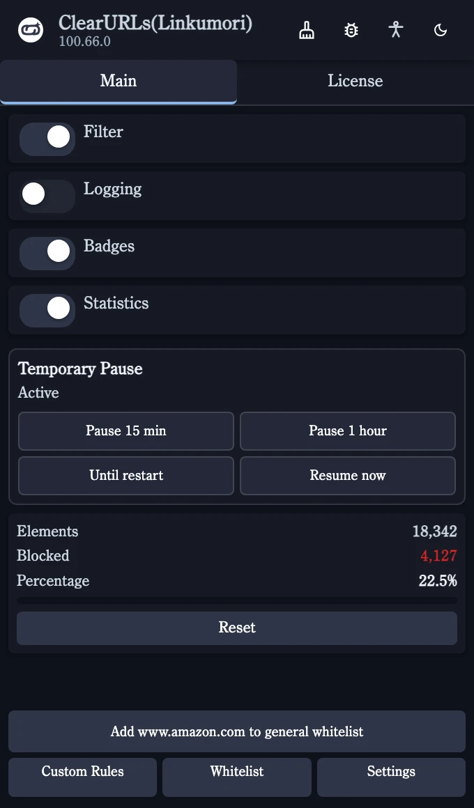

Leave any site alone. In one click.
Whitelist from the popup, for good or for one tab. Patterns like *.example.com and example.* work, and you can pause cleaning for a while.
Linkumori removes tracking parameters from every URL before the page loads. Right in your browser. Nothing collected, ever.


Every protection ClearURLs users rely on, rebuilt for Firefox's Manifest V3 and running on every request.
utm_*, fbclid, gclid and hundreds more, removed from the query and the fragment.
Click-through redirect links go straight to their destination, so the tracking hop never happens.
Google and Yandex can't swap result links for tracked versions when you click them.
Trackers hiding behind a first-party subdomain are resolved through DNS and matched against the real host.
Cache validators can't become identifiers, and link ping beacons that report your clicks are blocked.
Pages can't put tracking back with pushState or replaceState.
Copy any link already cleaned from the context menu, ready to paste anywhere.
Paste a list of URLs and clean every one at once, without visiting any of them.
Optionally block known ad and tracking hosts, with a page that still lets you continue.
ClearURLs users have asked for a whitelist since 2020. Linkumori has one, and the tools to shape every rule it runs.
Whitelist from the popup, for good or for one tab. Patterns like *.example.com and example.* work, and you can pause cleaning for a while.
Disable one rule, a provider or a whole rule set without writing counter-rules. Toggles are keyed provider::id, so they survive updates.
Load rule lists from endpoints you control, cached and refreshed on a schedule. A remote file can't redirect or block until you accept it.
Built-in and remote rules merge provider by provider. Your rules go on top.
Build providers in the editor, set rule defaults per file, and check every rule in the test lab before it runs.
A live log shows each cleaned request as it happens, the audit page shows the merged rule set, and a pre-filled report is one click away when a site breaks.
Request types, exceptions and preprocessors for whole files.
Light, dark, midnight, sunset, ice-cold and legacy.
Options on every page, checked against WCAG 2.2 AA.
Every string lives in _locales; a new language is one file.
Paste a link to watch what comes off. This runs a few sample rules in the page; the extension runs hundreds.
Nothing you paste leaves this page.
Linkumori collects nothing. No telemetry, no analytics, no usage data. Every URL is cleaned on your device.
Built-in rules ship with each release. Nothing is fetched unless you turn remote rules on.
Whoever runs a rules endpoint sees your IP address and when you connect. Use infrastructure you control, or a local network address.
No cookies, analytics or third-party requests. Read the site's privacy policy.
Linkumori is a fork of ClearURLs and shares its engine and rule heritage. How the rule formats compare ›
| Capability | ClearURLsThe original | LinkumoriIts successor |
|---|---|---|
| Shared | ||
| Remove tracking parameters | ||
| Block hyperlink auditing | ||
| Block ETag tracking | ||
| Prevent Google and Yandex search rewriting | ||
| Only in Linkumori | ||
| Per-domain whitelist | — | |
| Custom rules that override built-ins | — | |
| Disable specific rules | — | |
| Multiple remote rule sources | — | |
| Overload mode | — | |
| CNAME uncloaking | — | |
| Firefox Manifest V3 native | — | |
| Active development | — | |
Clean Link Notation is the JSON format behind built-in, remote and custom rules. The final 1.0 text settles run order, duplicates, toggle ids, escaping, redirect safety and what a remote file may do.
exceptionsSkip the provider if one matchesredirectionsA regex capture or a fixed $redirect= targetfieldRedirectionsA parameter's value becomes the new URLcompleteProviderBlock the request outrightrawRulesRegexes on the whole URL, always before field rulesrules · referralMarketingSorted by (stage, orderGroup, order, rank, arrayIndex)$removeparam filtersLast, guarded by @@ exceptions{
"cln": "1.0",
"providers": {
"amazon": {
"domainPatterns": ["||amazon.*^"],
"rawRules": ["\\/ref=[^/?]*"],
"rules": [
"qid",
"$removeparam=/^pd_rd_[a-z]*$/i",
{
"id": "token-rewrite",
"matchPattern": "token",
"replacePattern": "clean-§1§",
"order": 5
}
],
"referralMarketing": ["tag"],
"exceptions": [
"||amazon.com^/gp/redirector.html"
]
}
}
}order moves a field rule ahead of a raw rule.http or https targets, and at most 10 cycles per request.Free for Firefox on desktop and Android.